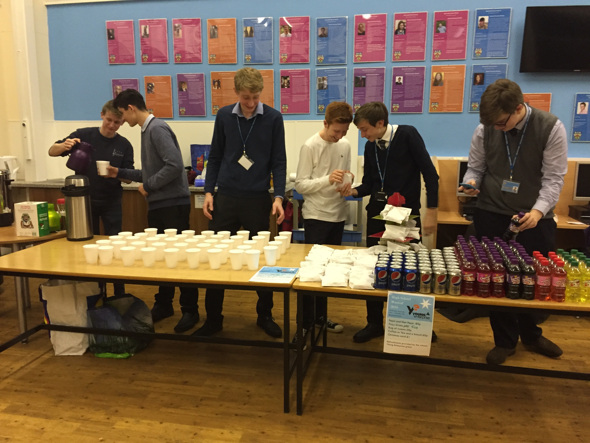

TG Enteprise
A branch of Young Enterprise
** WARNING **
Not all of the information presented on this page is neccesarily fact, even if it is presented as such.
Contents:
WikiLeaks allegations.
12/01/2017

Yesterday, documents containing sensitive information about TG Enterprise was released by WikiLeaks. They claim that these documents show the hold that corruption has on the heart of this business. One allegation was that members of the business had been exiled to North Korean concentration camps, after disagreements with previous Managing Director Thomas George. Although the current Managing Director is believed to make use of more standard business procedure, there was also a more recent claim that the production of so-called 'hand-made cards' for Valentines day had been outsourced to unpaid orphans in Cardiff. Assistant MD Jan Ilnicki strongly denied the alleged use of these third-world children.
Election results.
14/12/2016
Today a leadership election was held. The candidates for the role of Managing Director were Secretary Sudbury and Marketing Director Ilnicki. After two empassioned and well-thought-out speaches, the votes were counted, and the results were revealed: Secretary Sudbury won with 86.8% of the vote share, whilst Marketing Director Ilnicki got 14.2%. As a result of this election, the new Managing Director is Marley Sudbury, and the new Assistant Managing Director is Jan Ilnicki. Tommy G declined to comment. Whilst it is not known the roles the previous Managing Directors will be filling, it is speculated that there are many positions within the business which require occupation. This election signifies the landmark return of democracy to the previously autocratic company.
What have we actually done?
04/12/2016

From Wednesday the 30th of November to Saturday the 3rd of December, various members of TG Enterprise worked at the Bournside Christmas production of "High School Musical", selling teas, coffes, sweets and sodie-pops to the audience members. This event, and the cash flow from it, has helped to kickstart the business, primarily by providing the money used to pay start-up fees. All money that didn't go to paying of these fees went directly to the pockets of Mr Tommy G., even though he did little to no work. This caused even more resignations, especially amongst members whos origins lay amongst the lower classes.
Controversy.
23/11/2016

On the 22nd of November 2016, our business suffered losses from which we may never recover. Secretary James W., as well as several other members, resigned over the controversial transition of TG Enterprise from democracy to dictatorship. As Tommy G. himself became the autocratic führer, many felt that they could not maintain their roles in good faith. The resulting reshuffle may have long-reaching impacts for the future of the company. In the 'last vote' of the company, former IT Director Marley S. was voted into the position of Secretary, though many complained that this could not be considered a truly democratic vote, as only three member were allowed to vote, all of which were completely bias. Many also argued that the resignation of these members under such circumstances could be considered to be furthering the decrease of the reign of democracy.